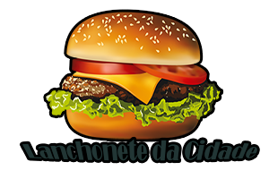
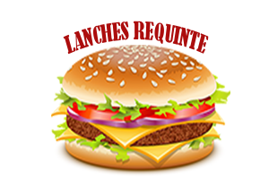
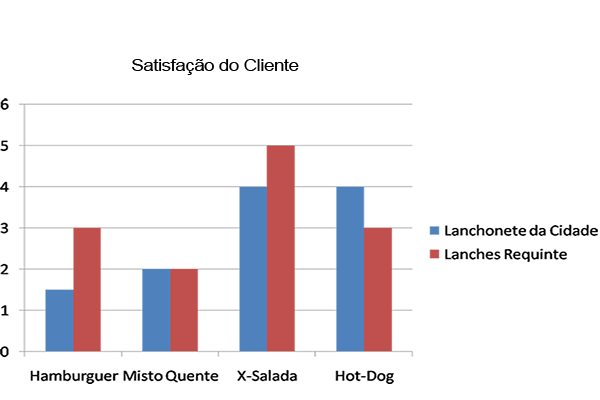

Av. Dr. Epitácio Pessoa, 396 - 1 e 3
- Aparecida, Santos - SP, 11030-600
Horário: Aberto ⋅ Fecha às 00:00
Av. Dr. Epitácio Pessoa, 399
- Aparecida, Santos - SP, 11030-600
Horário: Aberto ⋅ Fecha às 23:00
Uma pesquisa comparativa foi realizada com as lanchonetes Lanches Requinte e Lanchonete da Cidade.
Os preços de alguns sanduíches foram tabelados, e foi tirada a média dos preços.
Conclui-se desta forma que a Lanches Requinte possui os maiores preços, porém,
como pode-se ver na satisfação do cliente, isso não significa a maior aprovação.
Verificou-se que no produto Hamburguer foi encontrado a maior satisfação de consumo por parte dos clientes pesquisados na Lanchonete Requinte.
O tradicional Misto Quente é consumido acompanhado do bom e velho cafézinho, e é consumido igualmente nas duas lanchonetes no período da manhã.
O X-Salada é o campeão de vendas nos fins de semana. Famílias se reúnem para aproveitar desse delicioso lanche que mais parece uma refeição.
Veja o gráfico com a aprovação dos cliente em ambas as lanchonetes.
Já o Hot Dog prefirido por todos, com maior número de vendas é o da Lanchonete Da Cidade.
